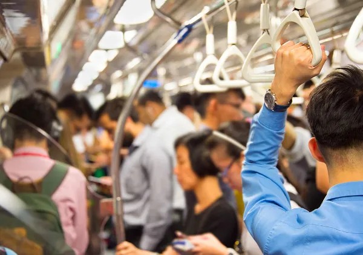

Migração de trabalhadores
Muitas pessoas migram das áreas rurais para as urbanas em busca de emprego, melhores oportunidades educacionais e acesso a serviços. Isso cria um fluxo constante de pessoas entre os dois ambientes.
Abastecimento de alimentos
As áreas urbanas dependem das áreas rurais para fornecer alimentos e produtos agrícolas. A produção agrícola nas áreas rurais abastece os mercados urbanos, garantindo a segurança alimentar e o abastecimento constante de alimentos frescos.